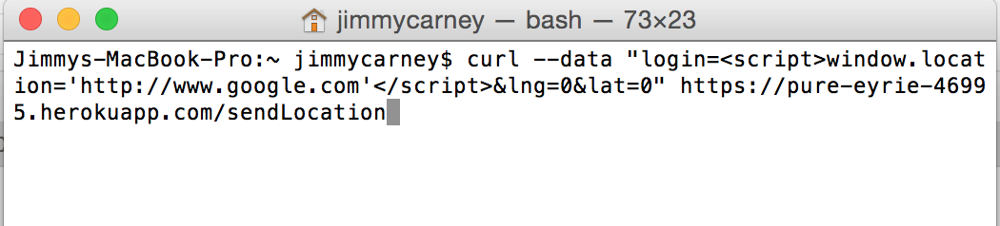

Issue #1
- Issue: javascript injection
- Location: javascript injected on /sendLocation page
- Severity: High- anyone can put whatever javascript they want to be executed
- Description: When this command (see below) was executed in the terminal, a data entry containing that javascript was added to the checkins collection. Now, when one tries to access the main app page, they are redirected to the google homepage. 
- Proof: This data entry was added to the checkins collection (screenshot from mLab). This results in the redirection to the google homepage.
- Resolution: Add code to remove special characters from the login string so that no one can inject any script tags (see code below)
login = login.replace(/[^\w\s]/gi, '');
Issue #2
- Issue: mongo injection attack
- Location: /checkins.json page
- Severity: High- someone can get all of the data that they should not have access to
- Description: I found the problem by using the following query string:
- Proof: See photo below
- Resolution: Utilize the mongo-sanitize tool to not allow request keys that begin with ‘$’
https://pure-eyrie-46995.herokuapp.com/checkins.json?login[$ne]=58ijDq5h
This returns all of the data for the logins that are not the one that is being passed into the query string

var sanitize = require('mongo-sanitize');
// The sanitize function will strip out any keys that start with '$' in the input,
// so you can pass it to MongoDB without worrying about malicious users overwriting
// query selectors.
var clean = sanitize(req.params.username);
Issue #3
- Issue:
- Location:
- Severity:
- Description:
- Proof:
- Resolution: